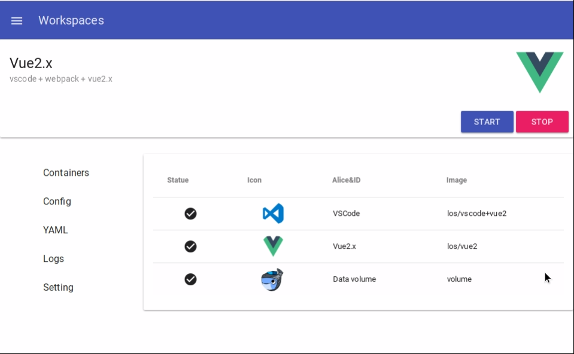

Overview
What's so simple about LatticeOS?
Detailed Overview
LatticeOS has more then one modules, so you can using docker-compose to start.
Installing docker first.
# curl -sSL https://get.docker.com | bashAnd then, you can easily deploy LatticeOS.
# docker run -it \
-v /var/run/docker.sock:/var/run/docker.sock \
--name latticeos gitai/latticeos
More about docker-compose and this docker-compose.yml
Xorg
Base service for GUI.
Restful-API
Export Restful API from host docker service.
Desktop
This image meant for running a light weight desktop.
Looks like a common desktop environment, but it`s in container.
More about this project.
Workspace
Lightweight management UI of Applications and Projects.
More about this project.
Demo
You can see some demo here.